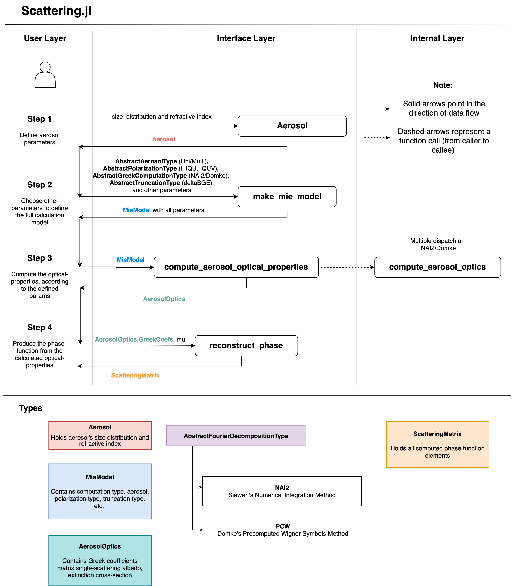

Scattering Module Overview
The Scattering module computes aerosol optical properties from Mie theory for user-defined size distributions and refractive indices. It supports:
- Siewert NAI-2 and Domke PCW Fourier decomposition methods
- scalar and polarized phase-matrix workflows (
Stokes_I,Stokes_IQU,Stokes_IQUV) - automatic differentiation (AD) for core aerosol parameters (
r_m,sigma,n_r,n_i) - phase matrix reconstruction from Greek coefficients for downstream RT use
Primary reference: Sanghavi (2014)
Typical Workflow
- Create an
Aerosolfrom a size distribution and refractive index - Build a
MieModelwithmake_mie_model - Compute bulk optical properties with
compute_aerosol_optical_properties - Reconstruct scattering matrix elements with
reconstruct_phase
For a runnable code walkthrough, see:
Core Outputs
compute_aerosol_optical_properties returns an AerosolOptics object containing:
greek_coefs:alpha, beta, gamma, delta, epsilon, zetaomega_tilde: single scattering albedok: bulk extinction cross-sectionf_t: truncation factor used by delta-M style workflowsderivs(if AD enabled): Jacobian of outputs with respect to[r_m, sigma, n_r, n_i]
Theory Mapping (Sanghavi 2014)
The table below maps key Scattering APIs to equations/sections in: Sanghavi (2014).
| vSmartMOM API | Theory anchor in paper | Notes |
|---|---|---|
compute_aerosol_optical_properties(model::MieModel{NAI2}) | Eq. (1), Fourier framework around Eq. (17), NAI-2 discussion in Secs. 3-4 | Uses Mie-series cross-sections and numerical-angular-integration route to Greek coefficients |
phase_function(aerosol, ...) | Eq. (1), Secs. 3-4 | Returns scalar phase function with C_ext, C_sca, g |
compute_aerosol_XS(aerosol, ...) | Eq. (1) | Cross-section-only path (no Greek reconstruction) |
reconstruct_phase(greek_coefs, μ) | Fourier/Greek matrix representation around Eq. (17) | Rebuilds angle-space matrix elements from stored Greek moments |
compute_aerosol_optical_properties(model::MieModel{PCW}) | Eq. (22) for S_l, Eq. (24) for Greek coefficients | Direct Domke/PCW route using Wigner-symbol tables |
compute_Sl(...) | Eq. (22) | Internal helper used by PCW implementation |
Implementation notes:
- The code follows Sanghavi's corrected Domke/PCW formalism where applicable.
- Some engineering choices (memory layout, AD wrapping, truncation helpers) are implementation details and not direct one-to-one equation transcriptions.
API Map (for miepython Users)
If you are coming from miepython, this is the closest functional mapping:
efficiencies(...)->compute_aerosol_XS(...)orphase_function(...)for bulk cross-sectionsS1_S2(...)/phase_matrix(...)->compute_aerosol_optical_properties(...)+reconstruct_phase(...)coefficients(...)-> low-levelcompute_mie_ab!andcompute_mie_S1S2!routines- normalization/RT-oriented outputs -> Greek coefficients +
omega_tilde,k,f_t
This module is oriented toward atmospheric RT pipelines where Fourier moments (Greek coefficients) are the main interface.
Mathematical Background
Mie Cross-Sections
The extinction and scattering cross-sections for a single sphere are computed from the Mie coefficients $a_n$ and $b_n$ (Sanghavi 2014, Eq. 1):
\[C_\text{ext} = \frac{2\pi}{k^2}\sum_{n=1}^{\infty}(2n+1)\,\text{Re}(a_n+b_n)\]
\[C_\text{scat} = \frac{2\pi}{k^2}\sum_{n=1}^{\infty}(2n+1)(|a_n|^2+|b_n|^2)\]
where $k = 2\pi/\lambda$ and the sum is truncated at a size-parameter-dependent $n_\text{max}$.
Scattering Matrix
The 4x4 scattering matrix $\mathbf{F}(\xi)$ for a single sphere has the form (Sanghavi 2014, Eq. 2):
\[\mathbf{F}(\xi) = \begin{pmatrix}f_{11} & f_{12} & 0 & 0\\f_{12} & f_{22} & 0 & 0\\0 & 0 & f_{33} & f_{34}\\0 & 0 & -f_{34} & f_{44}\end{pmatrix}\]
For spherical particles, $f_{11} = f_{22}$ and $f_{33} = f_{44}$, leaving four independent elements.
Greek Coefficient Matrix
The Greek matrix $\mathbf{B}_l$ provides the Fourier-space representation of the scattering matrix (Sanghavi 2014, Eq. 16):
\[\mathbf{B}_l = \begin{pmatrix}\beta_l & \gamma_l & 0 & 0\\\gamma_l & \alpha_l & 0 & 0\\0 & 0 & \zeta_l & -\epsilon_l\\0 & 0 & \epsilon_l & \delta_l\end{pmatrix}\]
The six Greek coefficients $(\alpha, \beta, \gamma, \delta, \epsilon, \zeta)$ are the compact representation stored in GreekCoefs and used by the RT kernels.
NAI2 vs PCW Performance
The two decomposition methods have different computational trade-offs:
"For polydispersions over a finite range of particle sizes, PCW is found to be at least 6–8 times faster for size parameters ranging from ~0 to beyond 900." – Sanghavi (2014)
NAI2 is the default due to its simplicity and lower memory footprint (no precomputed Wigner tables required). PCW becomes advantageous for large size parameters or when many repeated computations amortize the Wigner table precomputation.
Conventions
- Refractive index input uses
n_randn_i >= 0 - Length units for
lambda,r, andr_maxmust be consistent phase_function(...)andcompute_aerosol_XS(...)are convenience APIs when you do not need full Greek-coefficient reconstruction
Architecture

The design separates expensive Mie/Fourier computation from phase reconstruction:
compute_aerosol_optical_propertiescomputes and stores compact Fourier-space informationreconstruct_phaseevaluates angle-dependent scattering matrix elements at arbitrary angular grids
This separation is useful when RT or inversion workflows need repeated matrix reconstruction on different angle grids without recomputing the full Mie solution.